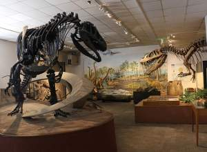

Brigham Young University - Home of the Cougars!
Provo Heritage Library
BYU Life Science Museum
BYU Marriott Center
Mormon Mexican History Museum
BYU Museum of Art

BYU Museum of Paleontology
Provo City Center Temple
Provo Utah Temple
LaVell Edwards Stadium
Y Mountain
View of Provo from the Y on Y Mountain
Provo
Chamber of Commerce